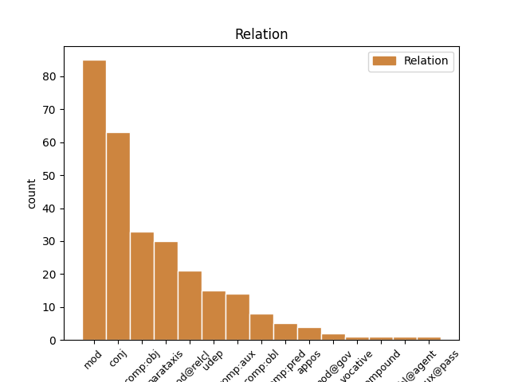
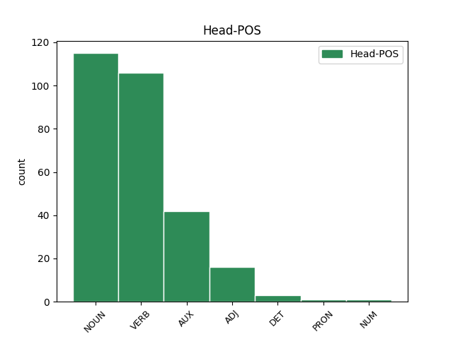
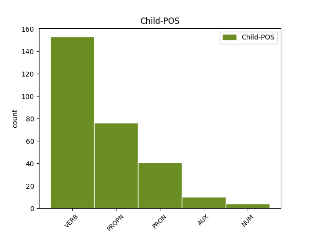

Distribution of features within this leaf



Agreement Rules sorted by frequency.
- When the dependent token is the conjunct(conj) of the head token, and the head token is VERB and the dependent token is VERB.
1 Žinoma _ _ _ _ 0 _ _ _
2 , _ _ _ _ 0 _ _ _
3 tai _ _ _ _ 0 _ _ _
4 tinkamiausias _ _ _ _ 0 _ _ _
5 būdas _ _ _ _ 0 _ _ _
6 : _ _ _ _ 0 _ _ _
7 todėl _ _ _ _ 0 _ _ _
8 visą _ _ _ _ 0 _ _ _
9 savo _ _ _ _ 0 _ _ _
10 sąmoningą _ _ _ _ 0 _ _ _
11 gyvenimą _ _ _ _ 0 _ _ _
12 pasisakydavau pasisakyti VERB VBC Mood=Ind|Number=Sing|Person=1|Polarity=Pos|Reflex=Yes|Tense=PastIter|VerbForm=Fin|Voice=Act 0 _ _ _
13 ir _ _ _ _ 0 _ _ _
14 dabar _ _ _ _ 0 _ _ _
15 pasisakau pasisakyti VERB VBC Mood=Ind|Number=Sing|Person=1|Polarity=Pos|Reflex=No|Tense=Pres|VerbForm=Fin|Voice=Act 12 conj _ En=say
16 už _ _ _ _ 0 _ _ _
17 nepriklausomą _ _ _ _ 0 _ _ _
18 Lietuvą _ _ _ _ 0 _ _ _
19 . _ _ _ _ 0 _ _ _
1 Esu _ _ _ _ 0 _ _ _
2 ne _ _ _ _ 0 _ _ _
3 kartą _ _ _ _ 0 _ _ _
4 kalbėjęs _ _ _ _ 0 _ _ _
5 apie _ _ _ _ 0 _ _ _
6 pavojingą _ _ _ _ 0 _ _ _
7 „ _ _ _ _ 0 _ _ _
8 lietuviškąją _ _ _ _ 0 _ _ _
9 triadą _ _ _ _ 0 _ _ _
10 “ _ _ _ _ 0 _ _ _
11 ( _ _ _ _ 0 _ _ _
12 sakyčiau _ _ _ _ 0 _ _ _
13 , _ _ _ _ 0 _ _ _
14 lietuviškąjį _ _ _ _ 0 _ _ _
15 Bermudų Bermudai PROPN NNP Case=Gen|Gender=Masc|Number=Sing 16 mod _ En=Bermuda
16 trikampį trikampis NOUN NN Case=Acc|Gender=Masc|Number=Sing 0 _ _ _
17 ) _ _ _ _ 0 _ _ _
18 – _ _ _ _ 0 _ _ _
19 nesutarimus _ _ _ _ 0 _ _ _
20 su _ _ _ _ 0 _ _ _
21 rusais _ _ _ _ 0 _ _ _
22 , _ _ _ _ 0 _ _ _
23 lenkais _ _ _ _ 0 _ _ _
24 ir _ _ _ _ 0 _ _ _
25 žydais _ _ _ _ 0 _ _ _
26 , _ _ _ _ 0 _ _ _
27 arba _ _ _ _ 0 _ _ _
28 su _ _ _ _ 0 _ _ _
29 Rusija _ _ _ _ 0 _ _ _
30 , _ _ _ _ 0 _ _ _
31 Lenkija _ _ _ _ 0 _ _ _
32 ir _ _ _ _ 0 _ _ _
33 Izraeliu _ _ _ _ 0 _ _ _
34 . _ _ _ _ 0 _ _ _
1 Iš _ _ _ _ 0 _ _ _
2 viso _ _ _ _ 0 _ _ _
3 kurti _ _ _ _ 0 _ _ _
4 fetišą _ _ _ _ 0 _ _ _
5 , _ _ _ _ 0 _ _ _
6 stabą _ _ _ _ 0 _ _ _
7 iš _ _ _ _ 0 _ _ _
8 valstybės _ _ _ _ 0 _ _ _
9 – _ _ _ _ 0 _ _ _
10 nepriimtina _ _ _ _ 0 _ _ _
11 praktika _ _ _ _ 0 _ _ _
12 , _ _ _ _ 0 _ _ _
13 nes _ _ _ _ 0 _ _ _
14 ji _ _ _ _ 0 _ _ _
15 pažeidžia _ _ _ _ 0 _ _ _
16 pirmąjį _ _ _ _ 0 _ _ _
17 Dievo _ _ _ _ 0 _ _ _
18 įsakymą _ _ _ _ 0 _ _ _
19 , _ _ _ _ 0 _ _ _
20 privalomą _ _ _ _ 0 _ _ _
21 ir _ _ _ _ 0 _ _ _
22 krikščioniui _ _ _ _ 0 _ _ _
23 , _ _ _ _ 0 _ _ _
24 ir _ _ _ _ 0 _ _ _
25 šiaip _ _ _ _ 0 _ _ _
26 jau _ _ _ _ 0 _ _ _
27 mąstančiam mąstyti VERB VBNL Case=Dat|Definite=Ind|Gender=Masc|Number=Sing|Polarity=Pos|Reflex=No|Tense=Pres|Variant=Full|VerbForm=Part|Voice=Act 28 mod _ En=think
28 žmogui žmogus NOUN NN Case=Dat|Gender=Masc|Number=Sing 0 _ _ _
29 . _ _ _ _ 0 _ _ _
1 Esu būti AUX VBC Mood=Ind|Number=Sing|Person=1|Polarity=Pos|Reflex=No|Tense=Pres|VerbForm=Fin|Voice=Act 0 _ _ _
2 ne _ _ _ _ 0 _ _ _
3 kartą _ _ _ _ 0 _ _ _
4 kalbėjęs kalbėti VERB VBNH Case=Nom|Definite=Ind|Gender=Masc|Number=Sing|Polarity=Pos|Reflex=No|Tense=PastSimp|VerbForm=Part|Voice=Act 1 comp:aux _ En=say
5 apie _ _ _ _ 0 _ _ _
6 pavojingą _ _ _ _ 0 _ _ _
7 „ _ _ _ _ 0 _ _ _
8 lietuviškąją _ _ _ _ 0 _ _ _
9 triadą _ _ _ _ 0 _ _ _
10 “ _ _ _ _ 0 _ _ _
11 ( _ _ _ _ 0 _ _ _
12 sakyčiau _ _ _ _ 0 _ _ _
13 , _ _ _ _ 0 _ _ _
14 lietuviškąjį _ _ _ _ 0 _ _ _
15 Bermudų _ _ _ _ 0 _ _ _
16 trikampį _ _ _ _ 0 _ _ _
17 ) _ _ _ _ 0 _ _ _
18 – _ _ _ _ 0 _ _ _
19 nesutarimus _ _ _ _ 0 _ _ _
20 su _ _ _ _ 0 _ _ _
21 rusais _ _ _ _ 0 _ _ _
22 , _ _ _ _ 0 _ _ _
23 lenkais _ _ _ _ 0 _ _ _
24 ir _ _ _ _ 0 _ _ _
25 žydais _ _ _ _ 0 _ _ _
26 , _ _ _ _ 0 _ _ _
27 arba _ _ _ _ 0 _ _ _
28 su _ _ _ _ 0 _ _ _
29 Rusija _ _ _ _ 0 _ _ _
30 , _ _ _ _ 0 _ _ _
31 Lenkija _ _ _ _ 0 _ _ _
32 ir _ _ _ _ 0 _ _ _
33 Izraeliu _ _ _ _ 0 _ _ _
34 . _ _ _ _ 0 _ _ _
1 Esama _ _ _ _ 0 _ _ _
2 taip _ _ _ _ 0 _ _ _
3 pat _ _ _ _ 0 _ _ _
4 psichologinio _ _ _ _ 0 _ _ _
5 komplekso _ _ _ _ 0 _ _ _
6 , _ _ _ _ 0 _ _ _
7 kurį kuris PRON WPA Case=Acc|Gender=Masc|Number=Sing 8 comp:obj _ En=which
8 pavadinčiau pavadinti VERB VBC Mood=Cnd|Number=Sing|Person=1|Polarity=Pos|Reflex=No|VerbForm=Fin|Voice=Act 0 _ _ _
9 „ _ _ _ _ 0 _ _ _
10 nepriklausomybės _ _ _ _ 0 _ _ _
11 fetišizmu _ _ _ _ 0 _ _ _
12 “ _ _ _ _ 0 _ _ _
13 . _ _ _ _ 0 _ _ _
1 Esama _ _ _ _ 0 _ _ _
2 taip _ _ _ _ 0 _ _ _
3 pat _ _ _ _ 0 _ _ _
4 psichologinio _ _ _ _ 0 _ _ _
5 komplekso kompleksas NOUN NN Case=Gen|Gender=Masc|Number=Sing 0 _ _ _
6 , _ _ _ _ 0 _ _ _
7 kurį _ _ _ _ 0 _ _ _
8 pavadinčiau pavadinti VERB VBC Mood=Cnd|Number=Sing|Person=1|Polarity=Pos|Reflex=No|VerbForm=Fin|Voice=Act 5 mod@relcl _ En=call
9 „ _ _ _ _ 0 _ _ _
10 nepriklausomybės _ _ _ _ 0 _ _ _
11 fetišizmu _ _ _ _ 0 _ _ _
12 “ _ _ _ _ 0 _ _ _
13 . _ _ _ _ 0 _ _ _
1 Beje _ _ _ _ 0 _ _ _
2 , _ _ _ _ 0 _ _ _
3 ateityje _ _ _ _ 0 _ _ _
4 ( _ _ _ _ 0 _ _ _
5 tiesa _ _ _ _ 0 _ _ _
6 , _ _ _ _ 0 _ _ _
7 gana _ _ _ _ 0 _ _ _
8 tolimoje _ _ _ _ 0 _ _ _
9 ) _ _ _ _ 0 _ _ _
10 nepriklausomas _ _ _ _ 0 _ _ _
11 valstybes _ _ _ _ 0 _ _ _
12 iš _ _ _ _ 0 _ _ _
13 viso _ _ _ _ 0 _ _ _
14 galbūt _ _ _ _ 0 _ _ _
15 pavaduos pavaduoti VERB VBC Mood=Ind|Number=Sing|Person=3|Polarity=Pos|Reflex=No|Tense=Fut|VerbForm=Fin|Voice=Act 0 _ _ _
16 globalinė _ _ _ _ 0 _ _ _
17 sąjungą _ _ _ _ 0 _ _ _
18 , _ _ _ _ 0 _ _ _
19 kurios _ _ _ _ 0 _ _ _
20 bruožai _ _ _ _ 0 _ _ _
21 pastebimi _ _ _ _ 0 _ _ _
22 ir _ _ _ _ 0 _ _ _
23 dabar _ _ _ _ 0 _ _ _
24 : _ _ _ _ 0 _ _ _
25 tai _ _ _ _ 0 _ _ _
26 anaiptol _ _ _ _ 0 _ _ _
27 nereiškia reikšti VERB VBC Mood=Ind|Number=Sing|Person=3|Polarity=Neg|Reflex=No|Tense=Pres|VerbForm=Fin|Voice=Act 15 parataxis _ En=mean|SpaceAfter=No
28 , _ _ _ _ 0 _ _ _
29 kad _ _ _ _ 0 _ _ _
30 išnyks _ _ _ _ 0 _ _ _
31 tautiniai _ _ _ _ 0 _ _ _
32 skirtingumai _ _ _ _ 0 _ _ _
33 , _ _ _ _ 0 _ _ _
34 kalbos _ _ _ _ 0 _ _ _
35 ir _ _ _ _ 0 _ _ _
36 tradicijos _ _ _ _ 0 _ _ _
37 . _ _ _ _ 0 _ _ _
1 Pridursiu _ _ _ _ 0 _ _ _
2 , _ _ _ _ 0 _ _ _
3 kad _ _ _ _ 0 _ _ _
4 man _ _ _ _ 0 _ _ _
5 asmeniškai _ _ _ _ 0 _ _ _
6 lietuvių _ _ _ _ 0 _ _ _
7 tautos _ _ _ _ 0 _ _ _
8 ir _ _ _ _ 0 _ _ _
9 kalbos _ _ _ _ 0 _ _ _
10 klestėjimas _ _ _ _ 0 _ _ _
11 yra _ _ _ _ 0 _ _ _
12 ypač _ _ _ _ 0 _ _ _
13 svarbus _ _ _ _ 0 _ _ _
14 , _ _ _ _ 0 _ _ _
15 nes _ _ _ _ 0 _ _ _
16 esu būti AUX VBC Mood=Ind|Number=Sing|Person=1|Polarity=Pos|Reflex=No|Tense=Pres|VerbForm=Fin|Voice=Act 0 _ _ _
17 ne _ _ _ _ 0 _ _ _
18 tik _ _ _ _ 0 _ _ _
19 publicistas _ _ _ _ 0 _ _ _
20 , _ _ _ _ 0 _ _ _
21 bet _ _ _ _ 0 _ _ _
22 pirmiausia _ _ _ _ 0 _ _ _
23 poetas _ _ _ _ 0 _ _ _
24 – _ _ _ _ 0 _ _ _
25 taigi _ _ _ _ 0 _ _ _
26 man _ _ _ _ 0 _ _ _
27 rūpi rūpėti VERB VBC Mood=Ind|Number=Sing|Person=3|Polarity=Pos|Reflex=No|Tense=Pres|VerbForm=Fin|Voice=Act 16 conj _ En=important
28 lietuviško _ _ _ _ 0 _ _ _
29 žodžio _ _ _ _ 0 _ _ _
30 likimas _ _ _ _ 0 _ _ _
31 . _ _ _ _ 0 _ _ _
1 Savarankiškas savarankiškas ADJ JJL Case=Nom|Definite=Ind|Degree=Pos|Gender=Masc|Number=Sing 0 _ _ _
2 , _ _ _ _ 0 _ _ _
3 nieko _ _ _ _ 0 _ _ _
4 neribojamas riboti VERB VBNL Case=Nom|Definite=Ind|Gender=Masc|Number=Sing|Polarity=Neg|Reflex=No|Tense=Pres|VerbForm=Part|Voice=Pass 1 conj _ En=limit
5 valstybingumas _ _ _ _ 0 _ _ _
6 laikomas _ _ _ _ 0 _ _ _
7 absoliučia _ _ _ _ 0 _ _ _
8 ir _ _ _ _ 0 _ _ _
9 pirmąja _ _ _ _ 0 _ _ _
10 vertybe _ _ _ _ 0 _ _ _
11 , _ _ _ _ 0 _ _ _
12 nepalyginti _ _ _ _ 0 _ _ _
13 svarbesne _ _ _ _ 0 _ _ _
14 už _ _ _ _ 0 _ _ _
15 demokratiją _ _ _ _ 0 _ _ _
16 , _ _ _ _ 0 _ _ _
17 žmogiškumą _ _ _ _ 0 _ _ _
18 ar _ _ _ _ 0 _ _ _
19 sveiką _ _ _ _ 0 _ _ _
20 protą _ _ _ _ 0 _ _ _
21 . _ _ _ _ 0 _ _ _
1 Emocijos _ _ _ _ 0 _ _ _
2 ir _ _ _ _ 0 _ _ _
3 ekstatiški _ _ _ _ 0 _ _ _
4 ritualai _ _ _ _ 0 _ _ _
5 yra būti AUX VBC Mood=Ind|Number=Plur|Person=3|Polarity=Pos|Reflex=No|Tense=Pres|VerbForm=Fin|Voice=Act 0 _ _ _
6 gana _ _ _ _ 0 _ _ _
7 pavojingas _ _ _ _ 0 _ _ _
8 daiktas _ _ _ _ 0 _ _ _
9 – _ _ _ _ 0 _ _ _
10 tuos _ _ _ _ 0 _ _ _
11 metodus _ _ _ _ 0 _ _ _
12 naudojo naudoti VERB VBC Mood=Ind|Number=Plur|Person=3|Polarity=Pos|Reflex=No|Tense=Past|VerbForm=Fin|Voice=Act 5 parataxis _ En=use
13 ir _ _ _ _ 0 _ _ _
14 nacizmas _ _ _ _ 0 _ _ _
15 , _ _ _ _ 0 _ _ _
16 ir _ _ _ _ 0 _ _ _
17 stalinizmas _ _ _ _ 0 _ _ _
18 . _ _ _ _ 0 _ _ _
1 Į _ _ _ _ 0 _ _ _
2 tai _ _ _ _ 0 _ _ _
3 man aš PRON PRP Case=Dat|Number=Sing|Person=1 5 comp:obl _ En=I
4 bus _ _ _ _ 0 _ _ _
5 atsakyta atsakyti VERB VBNL Case=Nom|Definite=Ind|Gender=Fem|Number=Sing|Polarity=Pos|Reflex=No|Tense=Past|VerbForm=Part|Voice=Pass 0 _ _ _
6 : _ _ _ _ 0 _ _ _
7 „ _ _ _ _ 0 _ _ _
8 čia _ _ _ _ 0 _ _ _
9 ne _ _ _ _ 0 _ _ _
10 mes _ _ _ _ 0 _ _ _
11 vieni _ _ _ _ 0 _ _ _
12 kalti _ _ _ _ 0 _ _ _
13 “ _ _ _ _ 0 _ _ _
14 . _ _ _ _ 0 _ _ _
1 Tapatinti _ _ _ _ 0 _ _ _
2 ją _ _ _ _ 0 _ _ _
3 su _ _ _ _ 0 _ _ _
4 TSRS _ _ _ _ 0 _ _ _
5 yra _ _ _ _ 0 _ _ _
6 piktybiška _ _ _ _ 0 _ _ _
7 demagogija _ _ _ _ 0 _ _ _
8 – _ _ _ _ 0 _ _ _
9 šiaip _ _ _ _ 0 _ _ _
10 ar _ _ _ _ 0 _ _ _
11 taip _ _ _ _ 0 _ _ _
12 , _ _ _ _ 0 _ _ _
13 kiekvienas _ _ _ _ 0 _ _ _
14 lietuvis _ _ _ _ 0 _ _ _
15 žino žinoti VERB VBC Mood=Ind|Number=Sing|Person=3|Polarity=Pos|Reflex=No|Tense=Pres|VerbForm=Fin|Voice=Act 0 _ _ _
16 , _ _ _ _ 0 _ _ _
17 kuo _ _ _ _ 0 _ _ _
18 skiriasi skirtis VERB VBC Mood=Ind|Number=Sing|Person=3|Polarity=Pos|Reflex=Yes|Tense=Pres|VerbForm=Fin|Voice=Act 15 comp:obj _ En=differ
19 Kolyma _ _ _ _ 0 _ _ _
20 nuo _ _ _ _ 0 _ _ _
21 Dublino _ _ _ _ 0 _ _ _
22 ar _ _ _ _ 0 _ _ _
23 Londono _ _ _ _ 0 _ _ _
24 . _ _ _ _ 0 _ _ _
1 Daugelį _ _ _ _ 0 _ _ _
2 apima _ _ _ _ 0 _ _ _
3 stačiai _ _ _ _ 0 _ _ _
4 rasistinis _ _ _ _ 0 _ _ _
5 siaubas _ _ _ _ 0 _ _ _
6 pagalvojus _ _ _ _ 0 _ _ _
7 , _ _ _ _ 0 _ _ _
8 kad _ _ _ _ 0 _ _ _
9 lietuviu _ _ _ _ 0 _ _ _
10 gali _ _ _ _ 0 _ _ _
11 būti _ _ _ _ 0 _ _ _
12 laikomas _ _ _ _ 0 _ _ _
13 vietnamietis _ _ _ _ 0 _ _ _
14 arba _ _ _ _ 0 _ _ _
15 juodaodis _ _ _ _ 0 _ _ _
16 , _ _ _ _ 0 _ _ _
17 jeigu _ _ _ _ 0 _ _ _
18 jis _ _ _ _ 0 _ _ _
19 gyvena gyventi VERB VBC Mood=Ind|Number=Sing|Person=3|Polarity=Pos|Reflex=No|Tense=Pres|VerbForm=Fin|Voice=Act 0 _ _ _
20 Lietuvoje Lietuva PROPN NNP Case=Loc|Gender=Fem|Number=Sing 19 udep _ En=Lithuania|SpaceAfter=No
21 , _ _ _ _ 0 _ _ _
22 turi _ _ _ _ 0 _ _ _
23 jos _ _ _ _ 0 _ _ _
24 pilietybę _ _ _ _ 0 _ _ _
25 vykdo _ _ _ _ 0 _ _ _
26 piliečio _ _ _ _ 0 _ _ _
27 pareigas _ _ _ _ 0 _ _ _
28 ir _ _ _ _ 0 _ _ _
29 kalba _ _ _ _ 0 _ _ _
30 lietuviškai _ _ _ _ 0 _ _ _
31 – _ _ _ _ 0 _ _ _
32 juo _ _ _ _ 0 _ _ _
33 labiau _ _ _ _ 0 _ _ _
34 lietuvis _ _ _ _ 0 _ _ _
35 gali _ _ _ _ 0 _ _ _
36 būti _ _ _ _ 0 _ _ _
37 ( _ _ _ _ 0 _ _ _
38 ir _ _ _ _ 0 _ _ _
39 turi _ _ _ _ 0 _ _ _
40 būti _ _ _ _ 0 _ _ _
41 ) _ _ _ _ 0 _ _ _
42 laikomi _ _ _ _ 0 _ _ _
43 jo _ _ _ _ 0 _ _ _
44 vaikai _ _ _ _ 0 _ _ _
45 . _ _ _ _ 0 _ _ _
1 Turi _ _ _ _ 0 _ _ _
2 atsirasti _ _ _ _ 0 _ _ _
3 nauja _ _ _ _ 0 _ _ _
4 valstybinė _ _ _ _ 0 _ _ _
5 ir _ _ _ _ 0 _ _ _
6 tautinė _ _ _ _ 0 _ _ _
7 sąmonė _ _ _ _ 0 _ _ _
8 , _ _ _ _ 0 _ _ _
9 tokia _ _ _ _ 0 _ _ _
10 kaip _ _ _ _ 0 _ _ _
11 dabartinių _ _ _ _ 0 _ _ _
12 vokiečių _ _ _ _ 0 _ _ _
13 , _ _ _ _ 0 _ _ _
14 anglų _ _ _ _ 0 _ _ _
15 ar _ _ _ _ 0 _ _ _
16 prancūzų _ _ _ _ 0 _ _ _
17 , _ _ _ _ 0 _ _ _
18 o _ _ _ _ 0 _ _ _
19 ne _ _ _ _ 0 _ _ _
20 tokia _ _ _ _ 0 _ _ _
21 , _ _ _ _ 0 _ _ _
22 kaip _ _ _ _ 0 _ _ _
23 Radio Radio NOUN NN Case=Gen|Gender=Masc|Number=Sing 0 _ _ _
24 Maryja _ _ _ _ 0 _ _ _
25 lenkų _ _ _ _ 0 _ _ _
26 arba _ _ _ _ 0 _ _ _
27 Dugino Dugina PROPN NNP Case=Gen|Gender=Masc|Number=Sing 23 conj _ En=Dugina
28 bei _ _ _ _ 0 _ _ _
29 Prochanovo _ _ _ _ 0 _ _ _
30 rusų _ _ _ _ 0 _ _ _
31 . _ _ _ _ 0 _ _ _
1 Ne _ _ _ _ 0 _ _ _
2 tik _ _ _ _ 0 _ _ _
3 žydų _ _ _ _ 0 _ _ _
4 , _ _ _ _ 0 _ _ _
5 bet _ _ _ _ 0 _ _ _
6 ir _ _ _ _ 0 _ _ _
7 airių _ _ _ _ 0 _ _ _
8 dauguma _ _ _ _ 0 _ _ _
9 gyvena _ _ _ _ 0 _ _ _
10 diasporoje _ _ _ _ 0 _ _ _
11 , _ _ _ _ 0 _ _ _
12 ir _ _ _ _ 0 _ _ _
13 tai _ _ _ _ 0 _ _ _
14 anaiptol _ _ _ _ 0 _ _ _
15 nekenkia kenkti VERB VBC Mood=Ind|Number=Sing|Person=3|Polarity=Neg|Reflex=No|Tense=Pres|VerbForm=Fin|Voice=Act 0 _ _ _
16 nei _ _ _ _ 0 _ _ _
17 Izraeliui Izraelis PROPN NNP Case=Dat|Gender=Masc|Number=Sing 15 comp:obj _ En=Israel|SpaceAfter=No
18 , _ _ _ _ 0 _ _ _
19 nei _ _ _ _ 0 _ _ _
20 Airijai _ _ _ _ 0 _ _ _
21 . _ _ _ _ 0 _ _ _
1 Absoliučiai _ _ _ _ 0 _ _ _
2 nepriklausoma _ _ _ _ 0 _ _ _
3 šių _ _ _ _ 0 _ _ _
4 dienų _ _ _ _ 0 _ _ _
5 pasaulyje _ _ _ _ 0 _ _ _
6 yra _ _ _ _ 0 _ _ _
7 nebent _ _ _ _ 0 _ _ _
8 Šiaurės _ _ _ _ 0 _ _ _
9 Korėja _ _ _ _ 0 _ _ _
10 ; _ _ _ _ 0 _ _ _
11 visos _ _ _ _ 0 _ _ _
12 kitos _ _ _ _ 0 _ _ _
13 šalys _ _ _ _ 0 _ _ _
14 , _ _ _ _ 0 _ _ _
15 įskaitant _ _ _ _ 0 _ _ _
16 JAV _ _ _ _ 0 _ _ _
17 ir _ _ _ _ 0 _ _ _
18 Rusiją _ _ _ _ 0 _ _ _
19 , _ _ _ _ 0 _ _ _
20 daugiau _ _ _ _ 0 _ _ _
21 ar _ _ _ _ 0 _ _ _
22 mažiau _ _ _ _ 0 _ _ _
23 riboja _ _ _ _ 0 _ _ _
24 savo _ _ _ _ 0 _ _ _
25 veikimo _ _ _ _ 0 _ _ _
26 laisvę _ _ _ _ 0 _ _ _
27 , _ _ _ _ 0 _ _ _
28 atsižvelgdamos _ _ _ _ 0 _ _ _
29 į _ _ _ _ 0 _ _ _
30 kitų _ _ _ _ 0 _ _ _
31 interesus _ _ _ _ 0 _ _ _
32 ( _ _ _ _ 0 _ _ _
33 būna _ _ _ _ 0 _ _ _
34 , _ _ _ _ 0 _ _ _
35 kad _ _ _ _ 0 _ _ _
36 ir _ _ _ _ 0 _ _ _
37 neatsižvelgia atsižvelgti VERB VBC Mood=Ind|Number=Sing|Person=3|Polarity=Neg|Reflex=Yes|Tense=Pres|VerbForm=Fin|Voice=Act 0 _ _ _
38 , _ _ _ _ 0 _ _ _
39 bet _ _ _ _ 0 _ _ _
40 tada _ _ _ _ 0 _ _ _
41 yra būti AUX VBC Mood=Ind|Number=Sing|Person=3|Polarity=Pos|Reflex=No|Tense=Pres|VerbForm=Fin|Voice=Act 37 conj _ En=be
42 teisingai _ _ _ _ 0 _ _ _
43 baramos _ _ _ _ 0 _ _ _
44 ) _ _ _ _ 0 _ _ _
45 . _ _ _ _ 0 _ _ _
1 Absoliučiai _ _ _ _ 0 _ _ _
2 nepriklausoma _ _ _ _ 0 _ _ _
3 šių _ _ _ _ 0 _ _ _
4 dienų _ _ _ _ 0 _ _ _
5 pasaulyje _ _ _ _ 0 _ _ _
6 yra _ _ _ _ 0 _ _ _
7 nebent _ _ _ _ 0 _ _ _
8 Šiaurės _ _ _ _ 0 _ _ _
9 Korėja _ _ _ _ 0 _ _ _
10 ; _ _ _ _ 0 _ _ _
11 visos _ _ _ _ 0 _ _ _
12 kitos _ _ _ _ 0 _ _ _
13 šalys _ _ _ _ 0 _ _ _
14 , _ _ _ _ 0 _ _ _
15 įskaitant _ _ _ _ 0 _ _ _
16 JAV _ _ _ _ 0 _ _ _
17 ir _ _ _ _ 0 _ _ _
18 Rusiją _ _ _ _ 0 _ _ _
19 , _ _ _ _ 0 _ _ _
20 daugiau _ _ _ _ 0 _ _ _
21 ar _ _ _ _ 0 _ _ _
22 mažiau _ _ _ _ 0 _ _ _
23 riboja riboti VERB VBC Mood=Ind|Number=Plur|Person=3|Polarity=Pos|Reflex=No|Tense=Pres|VerbForm=Fin|Voice=Act 0 _ _ _
24 savo _ _ _ _ 0 _ _ _
25 veikimo _ _ _ _ 0 _ _ _
26 laisvę _ _ _ _ 0 _ _ _
27 , _ _ _ _ 0 _ _ _
28 atsižvelgdamos atsižvelgti VERB VBG Gender=Fem|Number=Plur|Polarity=Pos|Reflex=Yes|VerbForm=PartPus|Voice=Act 23 mod _ En=take_into_account
29 į _ _ _ _ 0 _ _ _
30 kitų _ _ _ _ 0 _ _ _
31 interesus _ _ _ _ 0 _ _ _
32 ( _ _ _ _ 0 _ _ _
33 būna _ _ _ _ 0 _ _ _
34 , _ _ _ _ 0 _ _ _
35 kad _ _ _ _ 0 _ _ _
36 ir _ _ _ _ 0 _ _ _
37 neatsižvelgia _ _ _ _ 0 _ _ _
38 , _ _ _ _ 0 _ _ _
39 bet _ _ _ _ 0 _ _ _
40 tada _ _ _ _ 0 _ _ _
41 yra _ _ _ _ 0 _ _ _
42 teisingai _ _ _ _ 0 _ _ _
43 baramos _ _ _ _ 0 _ _ _
44 ) _ _ _ _ 0 _ _ _
45 . _ _ _ _ 0 _ _ _
1 Iš _ _ _ _ 0 _ _ _
2 esmės _ _ _ _ 0 _ _ _
3 jie _ _ _ _ 0 _ _ _
4 puikiai _ _ _ _ 0 _ _ _
5 užkonservavo _ _ _ _ 0 _ _ _
6 kaip _ _ _ _ 0 _ _ _
7 tik _ _ _ _ 0 _ _ _
8 tokią toks DET DT Case=Acc|Gender=Fem|Number=Sing 0 _ _ _
9 lietuvių _ _ _ _ 0 _ _ _
10 tautą _ _ _ _ 0 _ _ _
11 , _ _ _ _ 0 _ _ _
12 kokia _ _ _ _ 0 _ _ _
13 patinka patikti VERB VBC Mood=Ind|Number=Sing|Person=3|Polarity=Pos|Reflex=No|Tense=Pres|VerbForm=Fin|Voice=Act 8 mod@relcl _ En=like
14 mūsų _ _ _ _ 0 _ _ _
15 pseudointelektualams _ _ _ _ 0 _ _ _
16 . _ _ _ _ 0 _ _ _
1 Žinoma _ _ _ _ 0 _ _ _
2 , _ _ _ _ 0 _ _ _
3 tai _ _ _ _ 0 _ _ _
4 tinkamiausias _ _ _ _ 0 _ _ _
5 būdas būdas NOUN NN Case=Nom|Gender=Masc|Number=Sing 0 _ _ _
6 : _ _ _ _ 0 _ _ _
7 todėl _ _ _ _ 0 _ _ _
8 visą _ _ _ _ 0 _ _ _
9 savo _ _ _ _ 0 _ _ _
10 sąmoningą _ _ _ _ 0 _ _ _
11 gyvenimą _ _ _ _ 0 _ _ _
12 pasisakydavau pasisakyti VERB VBC Mood=Ind|Number=Sing|Person=1|Polarity=Pos|Reflex=Yes|Tense=PastIter|VerbForm=Fin|Voice=Act 5 parataxis _ En=speak
13 ir _ _ _ _ 0 _ _ _
14 dabar _ _ _ _ 0 _ _ _
15 pasisakau _ _ _ _ 0 _ _ _
16 už _ _ _ _ 0 _ _ _
17 nepriklausomą _ _ _ _ 0 _ _ _
18 Lietuvą _ _ _ _ 0 _ _ _
19 . _ _ _ _ 0 _ _ _
1 Pridursiu _ _ _ _ 0 _ _ _
2 , _ _ _ _ 0 _ _ _
3 kad _ _ _ _ 0 _ _ _
4 man aš PRON PRP Case=Acc|Number=Sing|Person=1 13 comp:obj _ En=I
5 asmeniškai _ _ _ _ 0 _ _ _
6 lietuvių _ _ _ _ 0 _ _ _
7 tautos _ _ _ _ 0 _ _ _
8 ir _ _ _ _ 0 _ _ _
9 kalbos _ _ _ _ 0 _ _ _
10 klestėjimas _ _ _ _ 0 _ _ _
11 yra _ _ _ _ 0 _ _ _
12 ypač _ _ _ _ 0 _ _ _
13 svarbus svarbus ADJ JJL Case=Nom|Definite=Ind|Degree=Pos|Gender=Masc|Number=Sing 0 _ _ _
14 , _ _ _ _ 0 _ _ _
15 nes _ _ _ _ 0 _ _ _
16 esu _ _ _ _ 0 _ _ _
17 ne _ _ _ _ 0 _ _ _
18 tik _ _ _ _ 0 _ _ _
19 publicistas _ _ _ _ 0 _ _ _
20 , _ _ _ _ 0 _ _ _
21 bet _ _ _ _ 0 _ _ _
22 pirmiausia _ _ _ _ 0 _ _ _
23 poetas _ _ _ _ 0 _ _ _
24 – _ _ _ _ 0 _ _ _
25 taigi _ _ _ _ 0 _ _ _
26 man _ _ _ _ 0 _ _ _
27 rūpi _ _ _ _ 0 _ _ _
28 lietuviško _ _ _ _ 0 _ _ _
29 žodžio _ _ _ _ 0 _ _ _
30 likimas _ _ _ _ 0 _ _ _
31 . _ _ _ _ 0 _ _ _
1 Beveik _ _ _ _ 0 _ _ _
2 visi _ _ _ _ 0 _ _ _
3 garsieji _ _ _ _ 0 _ _ _
4 mūsų _ _ _ _ 0 _ _ _
5 intelektualai _ _ _ _ 0 _ _ _
6 pasuko _ _ _ _ 0 _ _ _
7 arba _ _ _ _ 0 _ _ _
8 pradeda _ _ _ _ 0 _ _ _
9 sukti _ _ _ _ 0 _ _ _
10 ne _ _ _ _ 0 _ _ _
11 Sokrato _ _ _ _ 0 _ _ _
12 , _ _ _ _ 0 _ _ _
13 o _ _ _ _ 0 _ _ _
14 Strepsiado _ _ _ _ 0 _ _ _
15 keliu _ _ _ _ 0 _ _ _
16 , _ _ _ _ 0 _ _ _
17 nors _ _ _ _ 0 _ _ _
18 jau _ _ _ _ 0 _ _ _
19 du _ _ _ _ 0 _ _ _
20 tūkstančius _ _ _ _ 0 _ _ _
21 penkis _ _ _ _ 0 _ _ _
22 šimtus šimtas NUM CD Case=Acc|Gender=Masc|Number=Plur 23 mod@gov _ En=hundred
23 metų metai NOUN NN Case=Gen|Gender=Masc|Number=Plur 0 _ _ _
24 – _ _ _ _ 0 _ _ _
25 ir _ _ _ _ 0 _ _ _
26 ne _ _ _ _ 0 _ _ _
27 be _ _ _ _ 0 _ _ _
28 pagrindo _ _ _ _ 0 _ _ _
29 – _ _ _ _ 0 _ _ _
30 manoma _ _ _ _ 0 _ _ _
31 , _ _ _ _ 0 _ _ _
32 kad _ _ _ _ 0 _ _ _
33 intelektualui _ _ _ _ 0 _ _ _
34 labiau _ _ _ _ 0 _ _ _
35 dera _ _ _ _ 0 _ _ _
36 Sokrato _ _ _ _ 0 _ _ _
37 kelias _ _ _ _ 0 _ _ _
38 . _ _ _ _ 0 _ _ _
1 Niekas _ _ _ _ 0 _ _ _
2 iš _ _ _ _ 0 _ _ _
3 mūsų _ _ _ _ 0 _ _ _
4 nėra būti AUX VBC Mood=Ind|Number=Sing|Person=3|Polarity=Neg|Reflex=No|Tense=Pres|VerbForm=Fin|Voice=Act 0 _ _ _
5 nei _ _ _ _ 0 _ _ _
6 Platonas Platonas PROPN NNP Case=Nom|Gender=Masc|Number=Sing 4 comp:pred _ En=Plato|SpaceAfter=No
7 , _ _ _ _ 0 _ _ _
8 nei _ _ _ _ 0 _ _ _
9 Aristotelis _ _ _ _ 0 _ _ _
10 , _ _ _ _ 0 _ _ _
11 nei _ _ _ _ 0 _ _ _
12 netgi _ _ _ _ 0 _ _ _
13 Ksenofontas _ _ _ _ 0 _ _ _
14 . _ _ _ _ 0 _ _ _
1 Absoliučiai _ _ _ _ 0 _ _ _
2 nepriklausoma priklausyti VERB VBNL Case=Nom|Definite=Ind|Gender=Fem|Number=Sing|Polarity=Neg|Reflex=No|Tense=Pres|VerbForm=Part|Voice=Pass 6 comp:pred _ En=substantive
3 šių _ _ _ _ 0 _ _ _
4 dienų _ _ _ _ 0 _ _ _
5 pasaulyje _ _ _ _ 0 _ _ _
6 yra būti AUX VBC Mood=Ind|Number=Sing|Person=3|Polarity=Pos|Reflex=No|Tense=Pres|VerbForm=Fin|Voice=Act 0 _ _ _
7 nebent _ _ _ _ 0 _ _ _
8 Šiaurės _ _ _ _ 0 _ _ _
9 Korėja _ _ _ _ 0 _ _ _
10 ; _ _ _ _ 0 _ _ _
11 visos _ _ _ _ 0 _ _ _
12 kitos _ _ _ _ 0 _ _ _
13 šalys _ _ _ _ 0 _ _ _
14 , _ _ _ _ 0 _ _ _
15 įskaitant _ _ _ _ 0 _ _ _
16 JAV _ _ _ _ 0 _ _ _
17 ir _ _ _ _ 0 _ _ _
18 Rusiją _ _ _ _ 0 _ _ _
19 , _ _ _ _ 0 _ _ _
20 daugiau _ _ _ _ 0 _ _ _
21 ar _ _ _ _ 0 _ _ _
22 mažiau _ _ _ _ 0 _ _ _
23 riboja _ _ _ _ 0 _ _ _
24 savo _ _ _ _ 0 _ _ _
25 veikimo _ _ _ _ 0 _ _ _
26 laisvę _ _ _ _ 0 _ _ _
27 , _ _ _ _ 0 _ _ _
28 atsižvelgdamos _ _ _ _ 0 _ _ _
29 į _ _ _ _ 0 _ _ _
30 kitų _ _ _ _ 0 _ _ _
31 interesus _ _ _ _ 0 _ _ _
32 ( _ _ _ _ 0 _ _ _
33 būna _ _ _ _ 0 _ _ _
34 , _ _ _ _ 0 _ _ _
35 kad _ _ _ _ 0 _ _ _
36 ir _ _ _ _ 0 _ _ _
37 neatsižvelgia _ _ _ _ 0 _ _ _
38 , _ _ _ _ 0 _ _ _
39 bet _ _ _ _ 0 _ _ _
40 tada _ _ _ _ 0 _ _ _
41 yra _ _ _ _ 0 _ _ _
42 teisingai _ _ _ _ 0 _ _ _
43 baramos _ _ _ _ 0 _ _ _
44 ) _ _ _ _ 0 _ _ _
45 . _ _ _ _ 0 _ _ _
1 Lietuvoje Lietuva PROPN NNP Case=Loc|Gender=Fem|Number=Sing 2 udep _ En=Lithuania
2 populiari populiarus ADJ JJL Case=Nom|Definite=Ind|Degree=Pos|Gender=Fem|Number=Sing 0 _ _ _
3 nacistams _ _ _ _ 0 _ _ _
4 artimo _ _ _ _ 0 _ _ _
5 mąstytojo _ _ _ _ 0 _ _ _
6 Carlo _ _ _ _ 0 _ _ _
7 Schmidto _ _ _ _ 0 _ _ _
8 doktorina _ _ _ _ 0 _ _ _
9 , _ _ _ _ 0 _ _ _
10 nors _ _ _ _ 0 _ _ _
11 jos _ _ _ _ 0 _ _ _
12 rėmėjai _ _ _ _ 0 _ _ _
13 kartais _ _ _ _ 0 _ _ _
14 gal _ _ _ _ 0 _ _ _
15 net _ _ _ _ 0 _ _ _
16 negirdėjo _ _ _ _ 0 _ _ _
17 to _ _ _ _ 0 _ _ _
18 vardo _ _ _ _ 0 _ _ _
19 . _ _ _ _ 0 _ _ _
1 Tauta _ _ _ _ 0 _ _ _
2 , _ _ _ _ 0 _ _ _
3 anot _ _ _ _ 0 _ _ _
4 tų _ _ _ _ 0 _ _ _
5 filosofų _ _ _ _ 0 _ _ _
6 ir _ _ _ _ 0 _ _ _
7 nefilosofų _ _ _ _ 0 _ _ _
8 , _ _ _ _ 0 _ _ _
9 be _ _ _ _ 0 _ _ _
10 galo _ _ _ _ 0 _ _ _
11 silpna silpnas ADJ JJL Case=Nom|Definite=Ind|Degree=Pos|Gender=Fem|Number=Sing 0 _ _ _
12 ir _ _ _ _ 0 _ _ _
13 menka _ _ _ _ 0 _ _ _
14 – _ _ _ _ 0 _ _ _
15 jei _ _ _ _ 0 _ _ _
16 neaptversi _ _ _ _ 0 _ _ _
17 jos _ _ _ _ 0 _ _ _
18 tvora _ _ _ _ 0 _ _ _
19 , _ _ _ _ 0 _ _ _
20 geriausiai _ _ _ _ 0 _ _ _
21 netgi _ _ _ _ 0 _ _ _
22 spygliuota _ _ _ _ 0 _ _ _
23 viela _ _ _ _ 0 _ _ _
24 , _ _ _ _ 0 _ _ _
25 ji _ _ _ _ 0 _ _ _
26 nedelsiant _ _ _ _ 0 _ _ _
27 sužlugs sužlugti VERB VBC Mood=Ind|Number=Sing|Person=3|Polarity=Pos|Reflex=No|Tense=Fut|VerbForm=Fin|Voice=Act 11 parataxis _ En=disappear|SpaceAfter=No
28 . _ _ _ _ 0 _ _ _
1 „ _ _ _ _ 0 _ _ _
2 Šis _ _ _ _ 0 _ _ _
3 apdovanojimas _ _ _ _ 0 _ _ _
4 jai _ _ _ _ 0 _ _ _
5 skirtas _ _ _ _ 0 _ _ _
6 už _ _ _ _ 0 _ _ _
7 dialogo _ _ _ _ 0 _ _ _
8 kūrimą _ _ _ _ 0 _ _ _
9 , _ _ _ _ 0 _ _ _
10 atminties _ _ _ _ 0 _ _ _
11 skatinimą _ _ _ _ 0 _ _ _
12 ir _ _ _ _ 0 _ _ _
13 sakymą _ _ _ _ 0 _ _ _
14 , _ _ _ _ 0 _ _ _
15 kad _ _ _ _ 0 _ _ _
16 svetimo _ _ _ _ 0 _ _ _
17 skausmo _ _ _ _ 0 _ _ _
18 nėra _ _ _ _ 0 _ _ _
19 , _ _ _ _ 0 _ _ _
20 kad _ _ _ _ 0 _ _ _
21 XX _ _ _ _ 0 _ _ _
22 amžiaus _ _ _ _ 0 _ _ _
23 tragedijos _ _ _ _ 0 _ _ _
24 – _ _ _ _ 0 _ _ _
25 Holokauskas _ _ _ _ 0 _ _ _
26 , _ _ _ _ 0 _ _ _
27 tremtis _ _ _ _ 0 _ _ _
28 – _ _ _ _ 0 _ _ _
29 palietė _ _ _ _ 0 _ _ _
30 visus _ _ _ _ 0 _ _ _
31 Lietuvos _ _ _ _ 0 _ _ _
32 piliečius _ _ _ _ 0 _ _ _
33 , _ _ _ _ 0 _ _ _
34 nepaisant _ _ _ _ 0 _ _ _
35 jų _ _ _ _ 0 _ _ _
36 tautybės _ _ _ _ 0 _ _ _
37 “ _ _ _ _ 0 _ _ _
38 , _ _ _ _ 0 _ _ _
39 – _ _ _ _ 0 _ _ _
40 BNS Bns PROPN NNP Case=Dat|Gender=Masc|Number=Sing 41 comp:obl _ En=BNS
41 sakė sakyti VERB VBC Mood=Ind|Number=Sing|Person=3|Polarity=Pos|Reflex=No|Tense=Past|VerbForm=Fin|Voice=Act 0 _ _ _
42 Sugiharos _ _ _ _ 0 _ _ _
43 fondo _ _ _ _ 0 _ _ _
44 „ _ _ _ _ 0 _ _ _
45 Diplomatai _ _ _ _ 0 _ _ _
46 už _ _ _ _ 0 _ _ _
47 gyvybę _ _ _ _ 0 _ _ _
48 “ _ _ _ _ 0 _ _ _
49 atstovas _ _ _ _ 0 _ _ _
50 Linas _ _ _ _ 0 _ _ _
51 Venclauskas _ _ _ _ 0 _ _ _
52 . _ _ _ _ 0 _ _ _
1 Komedijos _ _ _ _ 0 _ _ _
2 centre _ _ _ _ 0 _ _ _
3 – _ _ _ _ 0 _ _ _
4 sodietis _ _ _ _ 0 _ _ _
5 Strepsiadas _ _ _ _ 0 _ _ _
6 , _ _ _ _ 0 _ _ _
7 šalia _ _ _ _ 0 _ _ _
8 kurio _ _ _ _ 0 _ _ _
9 namų _ _ _ _ 0 _ _ _
10 įsirengė įsirengti VERB VBC Mood=Ind|Number=Sing|Person=3|Polarity=Pos|Reflex=No|Tense=Past|VerbForm=Fin|Voice=Act 0 _ _ _
11 „ _ _ _ _ 0 _ _ _
12 mąstyklą _ _ _ _ 0 _ _ _
13 “ _ _ _ _ 0 _ _ _
14 filosofas _ _ _ _ 0 _ _ _
15 Sokratas _ _ _ _ 0 _ _ _
16 ( _ _ _ _ 0 _ _ _
17 tada _ _ _ _ 0 _ _ _
18 jis _ _ _ _ 0 _ _ _
19 dar _ _ _ _ 0 _ _ _
20 buvo būti AUX VBC Mood=Ind|Number=Sing|Person=3|Polarity=Pos|Reflex=No|Tense=Past|VerbForm=Fin|Voice=Act 10 parataxis _ En=be
21 gyvas _ _ _ _ 0 _ _ _
22 ir _ _ _ _ 0 _ _ _
23 greičiausiai _ _ _ _ 0 _ _ _
24 matė _ _ _ _ 0 _ _ _
25 spektaklį _ _ _ _ 0 _ _ _
26 ) _ _ _ _ 0 _ _ _
27 . _ _ _ _ 0 _ _ _
1 Svarbiausias _ _ _ _ 0 _ _ _
2 daiktas daiktas NOUN NN Case=Nom|Gender=Masc|Number=Sing 0 _ _ _
3 jam jis PRON PRP Case=Dat|Gender=Masc|Number=Sing|Person=3 2 udep _ En=he
4 yra _ _ _ _ 0 _ _ _
5 tėvų _ _ _ _ 0 _ _ _
6 priesaikai _ _ _ _ 0 _ _ _
7 ir _ _ _ _ 0 _ _ _
8 tautinės _ _ _ _ 0 _ _ _
9 šventenybės _ _ _ _ 0 _ _ _
10 . _ _ _ _ 0 _ _ _
1 Mąstanti _ _ _ _ 0 _ _ _
2 asmenybė _ _ _ _ 0 _ _ _
3 jam jis PRON PRP Case=Dat|Gender=Masc|Number=Sing|Person=3 4 udep _ En=he
4 svarbesnė svarbus ADJ JJR Case=Nom|Definite=Ind|Degree=Cmp|Gender=Fem|Number=Sing 0 _ _ _
5 už _ _ _ _ 0 _ _ _
6 kolektyvą _ _ _ _ 0 _ _ _
7 , _ _ _ _ 0 _ _ _
8 bendruomenę _ _ _ _ 0 _ _ _
9 , _ _ _ _ 0 _ _ _
10 tautą _ _ _ _ 0 _ _ _
11 . _ _ _ _ 0 _ _ _
1 Komedijos _ _ _ _ 0 _ _ _
2 gale _ _ _ _ 0 _ _ _
3 jis _ _ _ _ 0 _ _ _
4 padega _ _ _ _ 0 _ _ _
5 „ _ _ _ _ 0 _ _ _
6 mąstyklą _ _ _ _ 0 _ _ _
7 “ _ _ _ _ 0 _ _ _
8 , _ _ _ _ 0 _ _ _
9 kurioje kuris PRON WPA Case=Loc|Gender=Fem|Number=Sing 10 udep _ En=which
10 ima imti VERB VBC Mood=Ind|Number=Sing|Person=3|Polarity=Pos|Reflex=No|Tense=Pres|VerbForm=Fin|Voice=Act 0 _ _ _
11 pleškėti _ _ _ _ 0 _ _ _
12 Sokratas _ _ _ _ 0 _ _ _
13 su _ _ _ _ 0 _ _ _
14 svo _ _ _ _ 0 _ _ _
15 pasekėjais _ _ _ _ 0 _ _ _
16 . _ _ _ _ 0 _ _ _
1 Geroje _ _ _ _ 0 _ _ _
2 dramoje _ _ _ _ 0 _ _ _
3 nebūna _ _ _ _ 0 _ _ _
4 taip _ _ _ _ 0 _ _ _
5 , _ _ _ _ 0 _ _ _
6 kad _ _ _ _ 0 _ _ _
7 viena _ _ _ _ 0 _ _ _
8 pusė _ _ _ _ 0 _ _ _
9 būtų būti AUX VBC Mood=Cnd|Number=Sing|Person=3|Polarity=Pos|Reflex=No|VerbForm=Fin|Voice=Act 11 mod _ En=be
10 visiškai _ _ _ _ 0 _ _ _
11 neteisi neteisi ADJ JJL Case=Nom|Definite=Ind|Degree=Pos|Gender=Fem|Number=Sing 0 _ _ _
12 . _ _ _ _ 0 _ _ _
1 Bet _ _ _ _ 0 _ _ _
2 kad _ _ _ _ 0 _ _ _
3 ir _ _ _ _ 0 _ _ _
4 ką _ _ _ _ 0 _ _ _
5 sakysi _ _ _ _ 0 _ _ _
6 , _ _ _ _ 0 _ _ _
7 vienas _ _ _ _ 0 _ _ _
8 skirtumas _ _ _ _ 0 _ _ _
9 yra būti AUX VBC Mood=Ind|Number=Sing|Person=3|Polarity=Pos|Reflex=No|Tense=Pres|VerbForm=Fin|Voice=Act 0 _ _ _
10 akivaizdus _ _ _ _ 0 _ _ _
11 – _ _ _ _ 0 _ _ _
12 Sokratas _ _ _ _ 0 _ _ _
13 nebūtų būti AUX VBC Mood=Cnd|Number=Sing|Person=3|Polarity=Neg|Reflex=No|VerbForm=Fin|Voice=Act 9 mod _ En=be
14 padegęs _ _ _ _ 0 _ _ _
15 Strepsiado _ _ _ _ 0 _ _ _
16 namų _ _ _ _ 0 _ _ _
17 ir _ _ _ _ 0 _ _ _
18 nebūtų _ _ _ _ 0 _ _ _
19 jo _ _ _ _ 0 _ _ _
20 įskundinėjęs _ _ _ _ 0 _ _ _
21 valdžiai _ _ _ _ 0 _ _ _
22 . _ _ _ _ 0 _ _ _
1 Bet _ _ _ _ 0 _ _ _
2 kad _ _ _ _ 0 _ _ _
3 ir _ _ _ _ 0 _ _ _
4 ką _ _ _ _ 0 _ _ _
5 sakysi _ _ _ _ 0 _ _ _
6 , _ _ _ _ 0 _ _ _
7 vienas _ _ _ _ 0 _ _ _
8 skirtumas _ _ _ _ 0 _ _ _
9 yra _ _ _ _ 0 _ _ _
10 akivaizdus _ _ _ _ 0 _ _ _
11 – _ _ _ _ 0 _ _ _
12 Sokratas _ _ _ _ 0 _ _ _
13 nebūtų būti AUX VBC Mood=Cnd|Number=Sing|Person=3|Polarity=Neg|Reflex=No|VerbForm=Fin|Voice=Act 0 _ _ _
14 padegęs _ _ _ _ 0 _ _ _
15 Strepsiado _ _ _ _ 0 _ _ _
16 namų _ _ _ _ 0 _ _ _
17 ir _ _ _ _ 0 _ _ _
18 nebūtų būti AUX VBC Mood=Cnd|Number=Sing|Person=3|Polarity=Neg|Reflex=No|VerbForm=Fin|Voice=Act 13 conj _ En=be
19 jo _ _ _ _ 0 _ _ _
20 įskundinėjęs _ _ _ _ 0 _ _ _
21 valdžiai _ _ _ _ 0 _ _ _
22 . _ _ _ _ 0 _ _ _
1 Jeigu _ _ _ _ 0 _ _ _
2 vieną vienas NUM CD Case=Acc|Gender=Masc|Number=Sing 3 mod _ En=one
3 kartą kartas NOUN NN Case=Acc|Gender=Masc|Number=Sing 0 _ _ _
4 atsirado _ _ _ _ 0 _ _ _
5 „ _ _ _ _ 0 _ _ _
6 mąstykla _ _ _ _ 0 _ _ _
7 “ _ _ _ _ 0 _ _ _
8 , _ _ _ _ 0 _ _ _
9 ji _ _ _ _ 0 _ _ _
10 niekada _ _ _ _ 0 _ _ _
11 neišnyks _ _ _ _ 0 _ _ _
12 , _ _ _ _ 0 _ _ _
13 nors _ _ _ _ 0 _ _ _
14 tu _ _ _ _ 0 _ _ _
15 ją _ _ _ _ 0 _ _ _
16 šimtus _ _ _ _ 0 _ _ _
17 kartų _ _ _ _ 0 _ _ _
18 padeginėtum _ _ _ _ 0 _ _ _
19 . _ _ _ _ 0 _ _ _
1 Beveik _ _ _ _ 0 _ _ _
2 visi _ _ _ _ 0 _ _ _
3 garsieji _ _ _ _ 0 _ _ _
4 mūsų _ _ _ _ 0 _ _ _
5 intelektualai _ _ _ _ 0 _ _ _
6 pasuko _ _ _ _ 0 _ _ _
7 arba _ _ _ _ 0 _ _ _
8 pradeda _ _ _ _ 0 _ _ _
9 sukti _ _ _ _ 0 _ _ _
10 ne _ _ _ _ 0 _ _ _
11 Sokrato _ _ _ _ 0 _ _ _
12 , _ _ _ _ 0 _ _ _
13 o _ _ _ _ 0 _ _ _
14 Strepsiado _ _ _ _ 0 _ _ _
15 keliu _ _ _ _ 0 _ _ _
16 , _ _ _ _ 0 _ _ _
17 nors _ _ _ _ 0 _ _ _
18 jau _ _ _ _ 0 _ _ _
19 du _ _ _ _ 0 _ _ _
20 tūkstančius tūkstantis NUM CD Case=Acc|Gender=Masc|Number=Plur 22 compound _ En=thousand
21 penkis _ _ _ _ 0 _ _ _
22 šimtus šimtas NUM CD Case=Acc|Gender=Masc|Number=Plur 0 _ _ _
23 metų _ _ _ _ 0 _ _ _
24 – _ _ _ _ 0 _ _ _
25 ir _ _ _ _ 0 _ _ _
26 ne _ _ _ _ 0 _ _ _
27 be _ _ _ _ 0 _ _ _
28 pagrindo _ _ _ _ 0 _ _ _
29 – _ _ _ _ 0 _ _ _
30 manoma _ _ _ _ 0 _ _ _
31 , _ _ _ _ 0 _ _ _
32 kad _ _ _ _ 0 _ _ _
33 intelektualui _ _ _ _ 0 _ _ _
34 labiau _ _ _ _ 0 _ _ _
35 dera _ _ _ _ 0 _ _ _
36 Sokrato _ _ _ _ 0 _ _ _
37 kelias _ _ _ _ 0 _ _ _
38 . _ _ _ _ 0 _ _ _
1 Kalbama _ _ _ _ 0 _ _ _
2 apie _ _ _ _ 0 _ _ _
3 tradicines _ _ _ _ 0 _ _ _
4 Lietuvos _ _ _ _ 0 _ _ _
5 vertybes vertybė NOUN NN Case=Acc|Gender=Fem|Number=Plur 0 _ _ _
6 , _ _ _ _ 0 _ _ _
7 kurios _ _ _ _ 0 _ _ _
8 yra būti AUX VBC Mood=Ind|Number=Plur|Person=3|Polarity=Pos|Reflex=No|Tense=Pres|VerbForm=Fin|Voice=Act 5 mod@relcl _ En=be
9 priešingos _ _ _ _ 0 _ _ _
10 ir _ _ _ _ 0 _ _ _
11 priešiškos _ _ _ _ 0 _ _ _
12 abejotinoms _ _ _ _ 0 _ _ _
13 Europos _ _ _ _ 0 _ _ _
14 bei _ _ _ _ 0 _ _ _
15 globalizmo _ _ _ _ 0 _ _ _
16 vertybėms _ _ _ _ 0 _ _ _
17 . _ _ _ _ 0 _ _ _
1 Tikras _ _ _ _ 0 _ _ _
2 lietuvis _ _ _ _ 0 _ _ _
3 yra būti AUX VBC Mood=Ind|Number=Sing|Person=3|Polarity=Pos|Reflex=No|Tense=Pres|VerbForm=Fin|Voice=Act 0 _ _ _
4 tik _ _ _ _ 0 _ _ _
5 tas tas PRON DT Case=Nom|Gender=Masc|Number=Sing 3 comp:pred _ En=this|SpaceAfter=No
6 , _ _ _ _ 0 _ _ _
7 kuris _ _ _ _ 0 _ _ _
8 nemėgsta _ _ _ _ 0 _ _ _
9 , _ _ _ _ 0 _ _ _
10 o _ _ _ _ 0 _ _ _
11 dar _ _ _ _ 0 _ _ _
12 geriau _ _ _ _ 0 _ _ _
13 nekenčia _ _ _ _ 0 _ _ _
14 rusų _ _ _ _ 0 _ _ _
15 , _ _ _ _ 0 _ _ _
16 lenkų _ _ _ _ 0 _ _ _
17 , _ _ _ _ 0 _ _ _
18 žydų _ _ _ _ 0 _ _ _
19 , _ _ _ _ 0 _ _ _
20 taip _ _ _ _ 0 _ _ _
21 pat _ _ _ _ 0 _ _ _
22 ir _ _ _ _ 0 _ _ _
23 vakariečių _ _ _ _ 0 _ _ _
24 , _ _ _ _ 0 _ _ _
25 mėgsta _ _ _ _ 0 _ _ _
26 nebent _ _ _ _ 0 _ _ _
27 palestiniečius _ _ _ _ 0 _ _ _
28 ( _ _ _ _ 0 _ _ _
29 beje _ _ _ _ 0 _ _ _
30 , _ _ _ _ 0 _ _ _
31 nesunku _ _ _ _ 0 _ _ _
32 įsivaizduoti _ _ _ _ 0 _ _ _
33 , _ _ _ _ 0 _ _ _
34 ką _ _ _ _ 0 _ _ _
35 mūsų _ _ _ _ 0 _ _ _
36 patriotai _ _ _ _ 0 _ _ _
37 pradėtų _ _ _ _ 0 _ _ _
38 sakyti _ _ _ _ 0 _ _ _
39 apie _ _ _ _ 0 _ _ _
40 palestiniečius _ _ _ _ 0 _ _ _
41 , _ _ _ _ 0 _ _ _
42 jeigu _ _ _ _ 0 _ _ _
43 su _ _ _ _ 0 _ _ _
44 jais _ _ _ _ 0 _ _ _
45 susidurtų _ _ _ _ 0 _ _ _
46 kasdienybėje _ _ _ _ 0 _ _ _
47 , _ _ _ _ 0 _ _ _
48 kaip _ _ _ _ 0 _ _ _
49 susidūrė _ _ _ _ 0 _ _ _
50 su _ _ _ _ 0 _ _ _
51 čečėnais _ _ _ _ 0 _ _ _
52 ) _ _ _ _ 0 _ _ _
53 . _ _ _ _ 0 _ _ _
1 Tikras _ _ _ _ 0 _ _ _
2 lietuvis _ _ _ _ 0 _ _ _
3 yra _ _ _ _ 0 _ _ _
4 tik _ _ _ _ 0 _ _ _
5 tas tas PRON DT Case=Nom|Gender=Masc|Number=Sing 0 _ _ _
6 , _ _ _ _ 0 _ _ _
7 kuris _ _ _ _ 0 _ _ _
8 nemėgsta mėgti VERB VBC Mood=Ind|Number=Sing|Person=3|Polarity=Neg|Reflex=No|Tense=Pres|VerbForm=Fin|Voice=Act 5 mod@relcl _ En=like|SpaceAfter=No
9 , _ _ _ _ 0 _ _ _
10 o _ _ _ _ 0 _ _ _
11 dar _ _ _ _ 0 _ _ _
12 geriau _ _ _ _ 0 _ _ _
13 nekenčia _ _ _ _ 0 _ _ _
14 rusų _ _ _ _ 0 _ _ _
15 , _ _ _ _ 0 _ _ _
16 lenkų _ _ _ _ 0 _ _ _
17 , _ _ _ _ 0 _ _ _
18 žydų _ _ _ _ 0 _ _ _
19 , _ _ _ _ 0 _ _ _
20 taip _ _ _ _ 0 _ _ _
21 pat _ _ _ _ 0 _ _ _
22 ir _ _ _ _ 0 _ _ _
23 vakariečių _ _ _ _ 0 _ _ _
24 , _ _ _ _ 0 _ _ _
25 mėgsta _ _ _ _ 0 _ _ _
26 nebent _ _ _ _ 0 _ _ _
27 palestiniečius _ _ _ _ 0 _ _ _
28 ( _ _ _ _ 0 _ _ _
29 beje _ _ _ _ 0 _ _ _
30 , _ _ _ _ 0 _ _ _
31 nesunku _ _ _ _ 0 _ _ _
32 įsivaizduoti _ _ _ _ 0 _ _ _
33 , _ _ _ _ 0 _ _ _
34 ką _ _ _ _ 0 _ _ _
35 mūsų _ _ _ _ 0 _ _ _
36 patriotai _ _ _ _ 0 _ _ _
37 pradėtų _ _ _ _ 0 _ _ _
38 sakyti _ _ _ _ 0 _ _ _
39 apie _ _ _ _ 0 _ _ _
40 palestiniečius _ _ _ _ 0 _ _ _
41 , _ _ _ _ 0 _ _ _
42 jeigu _ _ _ _ 0 _ _ _
43 su _ _ _ _ 0 _ _ _
44 jais _ _ _ _ 0 _ _ _
45 susidurtų _ _ _ _ 0 _ _ _
46 kasdienybėje _ _ _ _ 0 _ _ _
47 , _ _ _ _ 0 _ _ _
48 kaip _ _ _ _ 0 _ _ _
49 susidūrė _ _ _ _ 0 _ _ _
50 su _ _ _ _ 0 _ _ _
51 čečėnais _ _ _ _ 0 _ _ _
52 ) _ _ _ _ 0 _ _ _
53 . _ _ _ _ 0 _ _ _
1 Seimas _ _ _ _ 0 _ _ _
2 , _ _ _ _ 0 _ _ _
3 apsijuokdamas _ _ _ _ 0 _ _ _
4 prieš _ _ _ _ 0 _ _ _
5 Europą _ _ _ _ 0 _ _ _
6 , _ _ _ _ 0 _ _ _
7 neretai _ _ _ _ 0 _ _ _
8 keldamas _ _ _ _ 0 _ _ _
9 jos _ _ _ _ 0 _ _ _
10 pasibjaurėjimą _ _ _ _ 0 _ _ _
11 , _ _ _ _ 0 _ _ _
12 priiminėja _ _ _ _ 0 _ _ _
13 įstatymus _ _ _ _ 0 _ _ _
14 apie _ _ _ _ 0 _ _ _
15 raides _ _ _ _ 0 _ _ _
16 „ _ _ _ _ 0 _ _ _
17 w _ _ _ _ 0 _ _ _
18 “ _ _ _ _ 0 _ _ _
19 draudimą _ _ _ _ 0 _ _ _
20 pasuose _ _ _ _ 0 _ _ _
21 ir _ _ _ _ 0 _ _ _
22 apie _ _ _ _ 0 _ _ _
23 draudimą _ _ _ _ 0 _ _ _
24 platinti _ _ _ _ 0 _ _ _
25 seksualinę _ _ _ _ 0 _ _ _
26 informaciją _ _ _ _ 0 _ _ _
27 , _ _ _ _ 0 _ _ _
28 o _ _ _ _ 0 _ _ _
29 asmenys _ _ _ _ 0 _ _ _
30 , _ _ _ _ 0 _ _ _
31 laikantys _ _ _ _ 0 _ _ _
32 save _ _ _ _ 0 _ _ _
33 laisvės _ _ _ _ 0 _ _ _
34 kovotojais _ _ _ _ 0 _ _ _
35 , _ _ _ _ 0 _ _ _
36 apmėto _ _ _ _ 0 _ _ _
37 akmenimis _ _ _ _ 0 _ _ _
38 gėjų _ _ _ _ 0 _ _ _
39 eitynes _ _ _ _ 0 _ _ _
40 ( _ _ _ _ 0 _ _ _
41 gink ginti VERB VBC Mood=Imp|Number=Sing|Person=2|Polarity=Pos|Reflex=No|VerbForm=Fin|Voice=Act 0 _ _ _
42 Dieve Dievas PROPN NNP Case=Voc|Gender=Masc|Number=Sing 41 vocative _ En=god|SpaceAfter=No
43 , _ _ _ _ 0 _ _ _
44 ne _ _ _ _ 0 _ _ _
45 nacių _ _ _ _ 0 _ _ _
46 simpatikų _ _ _ _ 0 _ _ _
47 eitynes _ _ _ _ 0 _ _ _
48 ) _ _ _ _ 0 _ _ _
49 . _ _ _ _ 0 _ _ _
1 Esu _ _ _ _ 0 _ _ _
2 skaitęs _ _ _ _ 0 _ _ _
3 – _ _ _ _ 0 _ _ _
4 tiesa _ _ _ _ 0 _ _ _
5 , _ _ _ _ 0 _ _ _
6 ne _ _ _ _ 0 _ _ _
7 lietuvių _ _ _ _ 0 _ _ _
8 spaudoje _ _ _ _ 0 _ _ _
9 , _ _ _ _ 0 _ _ _
10 - _ _ _ _ 0 _ _ _
11 interviu _ _ _ _ 0 _ _ _
12 su _ _ _ _ 0 _ _ _
13 mergina _ _ _ _ 0 _ _ _
14 iš _ _ _ _ 0 _ _ _
15 Europos _ _ _ _ 0 _ _ _
16 , _ _ _ _ 0 _ _ _
17 kuri _ _ _ _ 0 _ _ _
18 atsako _ _ _ _ 0 _ _ _
19 į _ _ _ _ 0 _ _ _
20 klausimą klausimas NOUN NN Case=Acc|Gender=Masc|Number=Sing 0 _ _ _
21 , _ _ _ _ 0 _ _ _
22 kuo _ _ _ _ 0 _ _ _
23 skiriasi skirtis VERB VBC Mood=Ind|Number=Sing|Person=3|Polarity=Pos|Reflex=Yes|Tense=Pres|VerbForm=Fin|Voice=Act 20 comp:obj _ En=differ
24 Rytų _ _ _ _ 0 _ _ _
25 Europos _ _ _ _ 0 _ _ _
26 politinė _ _ _ _ 0 _ _ _
27 scena _ _ _ _ 0 _ _ _
28 nuo _ _ _ _ 0 _ _ _
29 Vakarų _ _ _ _ 0 _ _ _
30 politinės _ _ _ _ 0 _ _ _
31 scenos _ _ _ _ 0 _ _ _
32 . _ _ _ _ 0 _ _ _
1 Kas _ _ _ _ 0 _ _ _
2 sovietams _ _ _ _ 0 _ _ _
3 tikrai _ _ _ _ 0 _ _ _
4 rūpėjo _ _ _ _ 0 _ _ _
5 padaryti _ _ _ _ 0 _ _ _
6 , _ _ _ _ 0 _ _ _
7 tas _ _ _ _ 0 _ _ _
8 jiems _ _ _ _ 0 _ _ _
9 ir _ _ _ _ 0 _ _ _
10 pavyko _ _ _ _ 0 _ _ _
11 : _ _ _ _ 0 _ _ _
12 savo _ _ _ _ 0 _ _ _
13 valdinius _ _ _ _ 0 _ _ _
14 , _ _ _ _ 0 _ _ _
15 kad _ _ _ _ 0 _ _ _
16 ir _ _ _ _ 0 _ _ _
17 kokia _ _ _ _ 0 _ _ _
18 kalba _ _ _ _ 0 _ _ _
19 jie _ _ _ _ 0 _ _ _
20 kalbėtų _ _ _ _ 0 _ _ _
21 ir _ _ _ _ 0 _ _ _
22 kuo _ _ _ _ 0 _ _ _
23 save _ _ _ _ 0 _ _ _
24 laikytų _ _ _ _ 0 _ _ _
25 , _ _ _ _ 0 _ _ _
26 jie _ _ _ _ 0 _ _ _
27 smarkiai _ _ _ _ 0 _ _ _
28 demoralizavo _ _ _ _ 0 _ _ _
29 , _ _ _ _ 0 _ _ _
30 įdiegė _ _ _ _ 0 _ _ _
31 jiems _ _ _ _ 0 _ _ _
32 siaurą _ _ _ _ 0 _ _ _
33 primityvų _ _ _ _ 0 _ _ _
34 mentalitetą _ _ _ _ 0 _ _ _
35 , _ _ _ _ 0 _ _ _
36 kurio kuris PRON WPA Case=Gen|Gender=Masc|Number=Sing 37 mod _ En=which
37 dalis dalis NOUN NN Case=Nom|Gender=Fem|Number=Sing 0 _ _ _
38 , _ _ _ _ 0 _ _ _
39 beje _ _ _ _ 0 _ _ _
40 , _ _ _ _ 0 _ _ _
41 buvo _ _ _ _ 0 _ _ _
42 ir _ _ _ _ 0 _ _ _
43 ksenofobija _ _ _ _ 0 _ _ _
44 , _ _ _ _ 0 _ _ _
45 ir _ _ _ _ 0 _ _ _
46 neapykanta _ _ _ _ 0 _ _ _
47 visokiems _ _ _ _ 0 _ _ _
48 „ _ _ _ _ 0 _ _ _
49 kosmopolitams _ _ _ _ 0 _ _ _
50 “ _ _ _ _ 0 _ _ _
51 . _ _ _ _ 0 _ _ _
1 Dar _ _ _ _ 0 _ _ _
2 blogiau _ _ _ _ 0 _ _ _
3 yra būti AUX VBC Mood=Ind|Number=Sing|Person=3|Polarity=Pos|Reflex=No|Tense=Pres|VerbForm=Fin|Voice=Act 0 _ _ _
4 Vengrijoje Vengrija PROPN NNP Case=Loc|Gender=Fem|Number=Sing 3 udep _ En=Hungary
5 ir _ _ _ _ 0 _ _ _
6 Slovakijoje _ _ _ _ 0 _ _ _
7 , _ _ _ _ 0 _ _ _
8 kur _ _ _ _ 0 _ _ _
9 fašistoidinės _ _ _ _ 0 _ _ _
10 tendencijos _ _ _ _ 0 _ _ _
11 toli _ _ _ _ 0 _ _ _
12 prasiskverbė _ _ _ _ 0 _ _ _
13 į _ _ _ _ 0 _ _ _
14 valdžią _ _ _ _ 0 _ _ _
15 , _ _ _ _ 0 _ _ _
16 o _ _ _ _ 0 _ _ _
17 pasipriešinimo _ _ _ _ 0 _ _ _
18 joms _ _ _ _ 0 _ _ _
19 ne _ _ _ _ 0 _ _ _
20 tiek _ _ _ _ 0 _ _ _
21 daug _ _ _ _ 0 _ _ _
22 . _ _ _ _ 0 _ _ _
1 Turi _ _ _ _ 0 _ _ _
2 atsirasti _ _ _ _ 0 _ _ _
3 nauja _ _ _ _ 0 _ _ _
4 valstybinė _ _ _ _ 0 _ _ _
5 ir _ _ _ _ 0 _ _ _
6 tautinė _ _ _ _ 0 _ _ _
7 sąmonė _ _ _ _ 0 _ _ _
8 , _ _ _ _ 0 _ _ _
9 tokia _ _ _ _ 0 _ _ _
10 kaip _ _ _ _ 0 _ _ _
11 dabartinių _ _ _ _ 0 _ _ _
12 vokiečių _ _ _ _ 0 _ _ _
13 , _ _ _ _ 0 _ _ _
14 anglų _ _ _ _ 0 _ _ _
15 ar _ _ _ _ 0 _ _ _
16 prancūzų _ _ _ _ 0 _ _ _
17 , _ _ _ _ 0 _ _ _
18 o _ _ _ _ 0 _ _ _
19 ne _ _ _ _ 0 _ _ _
20 tokia _ _ _ _ 0 _ _ _
21 , _ _ _ _ 0 _ _ _
22 kaip _ _ _ _ 0 _ _ _
23 Radio Radio NOUN NN Case=Gen|Gender=Masc|Number=Sing 0 _ _ _
24 Maryja Maryja PROPN NNP Case=Nom|Gender=Fem|Number=Sing 23 appos _ En=Maryja
25 lenkų _ _ _ _ 0 _ _ _
26 arba _ _ _ _ 0 _ _ _
27 Dugino _ _ _ _ 0 _ _ _
28 bei _ _ _ _ 0 _ _ _
29 Prochanovo _ _ _ _ 0 _ _ _
30 rusų _ _ _ _ 0 _ _ _
31 . _ _ _ _ 0 _ _ _
1 „ _ _ _ _ 0 _ _ _
2 Mano _ _ _ _ 0 _ _ _
3 adresas _ _ _ _ 0 _ _ _
4 ne _ _ _ _ 0 _ _ _
5 namas namas NOUN NN Case=Nom|Gender=Masc|Number=Sing 0 _ _ _
6 ir _ _ _ _ 0 _ _ _
7 ne _ _ _ _ 0 _ _ _
8 gatvė _ _ _ _ 0 _ _ _
9 – _ _ _ _ 0 _ _ _
10 mano _ _ _ _ 0 _ _ _
11 adresas _ _ _ _ 0 _ _ _
12 Europos _ _ _ _ 0 _ _ _
13 Sąjunga sąjunga PROPN NNP Case=Nom|Gender=Fem|Number=Sing 5 parataxis _ En=union|SpaceAfter=No
14 “ _ _ _ _ 0 _ _ _
15 , _ _ _ _ 0 _ _ _
16 toliau _ _ _ _ 0 _ _ _
17 ironizuoja _ _ _ _ 0 _ _ _
18 Radžvilas _ _ _ _ 0 _ _ _
19 . _ _ _ _ 0 _ _ _
1 Italų _ _ _ _ 0 _ _ _
2 , _ _ _ _ 0 _ _ _
3 graikų _ _ _ _ 0 _ _ _
4 ir _ _ _ _ 0 _ _ _
5 kitos _ _ _ _ 0 _ _ _
6 diasporos _ _ _ _ 0 _ _ _
7 taip _ _ _ _ 0 _ _ _
8 pat _ _ _ _ 0 _ _ _
9 didžiulės didžiulis ADJ JJL Case=Nom|Definite=Ind|Degree=Pos|Gender=Fem|Number=Plur 0 _ _ _
10 , _ _ _ _ 0 _ _ _
11 bet _ _ _ _ 0 _ _ _
12 Italija _ _ _ _ 0 _ _ _
13 ir _ _ _ _ 0 _ _ _
14 Graikija _ _ _ _ 0 _ _ _
15 dėl _ _ _ _ 0 _ _ _
16 to _ _ _ _ 0 _ _ _
17 nežuvo žūti VERB VBC Mood=Ind|Number=Plur|Person=3|Polarity=Neg|Reflex=No|Tense=Past|VerbForm=Fin|Voice=Act 9 mod _ En=die_out|SpaceAfter=No
18 . _ _ _ _ 0 _ _ _
1 Savarankiškas _ _ _ _ 0 _ _ _
2 , _ _ _ _ 0 _ _ _
3 nieko niekas PRON DT Case=Gen|Gender=Masc|Number=Sing 4 comp:obl@agent _ En=nothing
4 neribojamas riboti VERB VBNL Case=Nom|Definite=Ind|Gender=Masc|Number=Sing|Polarity=Neg|Reflex=No|Tense=Pres|VerbForm=Part|Voice=Pass 0 _ _ _
5 valstybingumas _ _ _ _ 0 _ _ _
6 laikomas _ _ _ _ 0 _ _ _
7 absoliučia _ _ _ _ 0 _ _ _
8 ir _ _ _ _ 0 _ _ _
9 pirmąja _ _ _ _ 0 _ _ _
10 vertybe _ _ _ _ 0 _ _ _
11 , _ _ _ _ 0 _ _ _
12 nepalyginti _ _ _ _ 0 _ _ _
13 svarbesne _ _ _ _ 0 _ _ _
14 už _ _ _ _ 0 _ _ _
15 demokratiją _ _ _ _ 0 _ _ _
16 , _ _ _ _ 0 _ _ _
17 žmogiškumą _ _ _ _ 0 _ _ _
18 ar _ _ _ _ 0 _ _ _
19 sveiką _ _ _ _ 0 _ _ _
20 protą _ _ _ _ 0 _ _ _
21 . _ _ _ _ 0 _ _ _
1 Į _ _ _ _ 0 _ _ _
2 tai _ _ _ _ 0 _ _ _
3 man _ _ _ _ 0 _ _ _
4 bus būti AUX VBC Mood=Ind|Number=Sing|Person=3|Polarity=Pos|Reflex=No|Tense=Fut|VerbForm=Fin|Voice=Act 0 _ _ _
5 atsakyta atsakyti VERB VBNL Case=Nom|Definite=Ind|Gender=Fem|Number=Sing|Polarity=Pos|Reflex=No|Tense=Past|VerbForm=Part|Voice=Pass 4 comp:aux@pass _ En=answer|SpaceAfter=No
6 : _ _ _ _ 0 _ _ _
7 „ _ _ _ _ 0 _ _ _
8 čia _ _ _ _ 0 _ _ _
9 ne _ _ _ _ 0 _ _ _
10 mes _ _ _ _ 0 _ _ _
11 vieni _ _ _ _ 0 _ _ _
12 kalti _ _ _ _ 0 _ _ _
13 “ _ _ _ _ 0 _ _ _
14 . _ _ _ _ 0 _ _ _
Disagree Examples:
1 „ _ _ _ _ 0 _ _ _
2 Šis _ _ _ _ 0 _ _ _
3 apdovanojimas _ _ _ _ 0 _ _ _
4 jai _ _ _ _ 0 _ _ _
5 skirtas _ _ _ _ 0 _ _ _
6 už _ _ _ _ 0 _ _ _
7 dialogo _ _ _ _ 0 _ _ _
8 kūrimą _ _ _ _ 0 _ _ _
9 , _ _ _ _ 0 _ _ _
10 atminties _ _ _ _ 0 _ _ _
11 skatinimą _ _ _ _ 0 _ _ _
12 ir _ _ _ _ 0 _ _ _
13 sakymą _ _ _ _ 0 _ _ _
14 , _ _ _ _ 0 _ _ _
15 kad _ _ _ _ 0 _ _ _
16 svetimo _ _ _ _ 0 _ _ _
17 skausmo _ _ _ _ 0 _ _ _
18 nėra _ _ _ _ 0 _ _ _
19 , _ _ _ _ 0 _ _ _
20 kad _ _ _ _ 0 _ _ _
21 XX _ _ _ _ 0 _ _ _
22 amžiaus _ _ _ _ 0 _ _ _
23 tragedijos tragedija NOUN NN Case=Nom|Gender=Fem|Number=Plur 0 _ _ _
24 – _ _ _ _ 0 _ _ _
25 Holokauskas Holokauskas PROPN NNP Case=Nom|Gender=Masc|Number=Sing 23 appos _ En=Holocaust|SpaceAfter=No
26 , _ _ _ _ 0 _ _ _
27 tremtis _ _ _ _ 0 _ _ _
28 – _ _ _ _ 0 _ _ _
29 palietė _ _ _ _ 0 _ _ _
30 visus _ _ _ _ 0 _ _ _
31 Lietuvos _ _ _ _ 0 _ _ _
32 piliečius _ _ _ _ 0 _ _ _
33 , _ _ _ _ 0 _ _ _
34 nepaisant _ _ _ _ 0 _ _ _
35 jų _ _ _ _ 0 _ _ _
36 tautybės _ _ _ _ 0 _ _ _
37 “ _ _ _ _ 0 _ _ _
38 , _ _ _ _ 0 _ _ _
39 – _ _ _ _ 0 _ _ _
40 BNS _ _ _ _ 0 _ _ _
41 sakė _ _ _ _ 0 _ _ _
42 Sugiharos _ _ _ _ 0 _ _ _
43 fondo _ _ _ _ 0 _ _ _
44 „ _ _ _ _ 0 _ _ _
45 Diplomatai _ _ _ _ 0 _ _ _
46 už _ _ _ _ 0 _ _ _
47 gyvybę _ _ _ _ 0 _ _ _
48 “ _ _ _ _ 0 _ _ _
49 atstovas _ _ _ _ 0 _ _ _
50 Linas _ _ _ _ 0 _ _ _
51 Venclauskas _ _ _ _ 0 _ _ _
52 . _ _ _ _ 0 _ _ _
1 „ _ _ _ _ 0 _ _ _
2 Šis _ _ _ _ 0 _ _ _
3 apdovanojimas _ _ _ _ 0 _ _ _
4 jai _ _ _ _ 0 _ _ _
5 skirtas _ _ _ _ 0 _ _ _
6 už _ _ _ _ 0 _ _ _
7 dialogo _ _ _ _ 0 _ _ _
8 kūrimą _ _ _ _ 0 _ _ _
9 , _ _ _ _ 0 _ _ _
10 atminties _ _ _ _ 0 _ _ _
11 skatinimą _ _ _ _ 0 _ _ _
12 ir _ _ _ _ 0 _ _ _
13 sakymą _ _ _ _ 0 _ _ _
14 , _ _ _ _ 0 _ _ _
15 kad _ _ _ _ 0 _ _ _
16 svetimo _ _ _ _ 0 _ _ _
17 skausmo _ _ _ _ 0 _ _ _
18 nėra _ _ _ _ 0 _ _ _
19 , _ _ _ _ 0 _ _ _
20 kad _ _ _ _ 0 _ _ _
21 XX _ _ _ _ 0 _ _ _
22 amžiaus _ _ _ _ 0 _ _ _
23 tragedijos _ _ _ _ 0 _ _ _
24 – _ _ _ _ 0 _ _ _
25 Holokauskas _ _ _ _ 0 _ _ _
26 , _ _ _ _ 0 _ _ _
27 tremtis _ _ _ _ 0 _ _ _
28 – _ _ _ _ 0 _ _ _
29 palietė _ _ _ _ 0 _ _ _
30 visus _ _ _ _ 0 _ _ _
31 Lietuvos Lietuva PROPN NNP Case=Gen|Gender=Fem|Number=Sing 32 mod _ En=Lithuania
32 piliečius pilietis NOUN NN Case=Acc|Gender=Masc|Number=Plur 0 _ _ _
33 , _ _ _ _ 0 _ _ _
34 nepaisant _ _ _ _ 0 _ _ _
35 jų _ _ _ _ 0 _ _ _
36 tautybės _ _ _ _ 0 _ _ _
37 “ _ _ _ _ 0 _ _ _
38 , _ _ _ _ 0 _ _ _
39 – _ _ _ _ 0 _ _ _
40 BNS _ _ _ _ 0 _ _ _
41 sakė _ _ _ _ 0 _ _ _
42 Sugiharos _ _ _ _ 0 _ _ _
43 fondo _ _ _ _ 0 _ _ _
44 „ _ _ _ _ 0 _ _ _
45 Diplomatai _ _ _ _ 0 _ _ _
46 už _ _ _ _ 0 _ _ _
47 gyvybę _ _ _ _ 0 _ _ _
48 “ _ _ _ _ 0 _ _ _
49 atstovas _ _ _ _ 0 _ _ _
50 Linas _ _ _ _ 0 _ _ _
51 Venclauskas _ _ _ _ 0 _ _ _
52 . _ _ _ _ 0 _ _ _
1 423 _ _ _ _ 0 _ _ _
2 metais _ _ _ _ 0 _ _ _
3 prieš _ _ _ _ 0 _ _ _
4 Kristaus _ _ _ _ 0 _ _ _
5 gimimą _ _ _ _ 0 _ _ _
6 , _ _ _ _ 0 _ _ _
7 per _ _ _ _ 0 _ _ _
8 Didžiųjų _ _ _ _ 0 _ _ _
9 Dionizijų Dionizius PROPN NNP Case=Gen|Gender=Fem|Number=Plur 10 mod _ En=Dionysus
10 šventę šventė NOUN NN Case=Acc|Gender=Fem|Number=Sing 0 _ _ _
11 , _ _ _ _ 0 _ _ _
12 Atėnuose _ _ _ _ 0 _ _ _
13 buvo _ _ _ _ 0 _ _ _
14 pastatyta _ _ _ _ 0 _ _ _
15 Aristofano _ _ _ _ 0 _ _ _
16 komedija _ _ _ _ 0 _ _ _
17 „ _ _ _ _ 0 _ _ _
18 Debesys _ _ _ _ 0 _ _ _
19 “ _ _ _ _ 0 _ _ _
20 . _ _ _ _ 0 _ _ _
1 423 _ _ _ _ 0 _ _ _
2 metais _ _ _ _ 0 _ _ _
3 prieš _ _ _ _ 0 _ _ _
4 Kristaus _ _ _ _ 0 _ _ _
5 gimimą _ _ _ _ 0 _ _ _
6 , _ _ _ _ 0 _ _ _
7 per _ _ _ _ 0 _ _ _
8 Didžiųjų _ _ _ _ 0 _ _ _
9 Dionizijų _ _ _ _ 0 _ _ _
10 šventę _ _ _ _ 0 _ _ _
11 , _ _ _ _ 0 _ _ _
12 Atėnuose Atėnai PROPN NNP Case=Loc|Gender=Masc|Number=Plur 13 udep _ En=Athens
13 buvo būti AUX VBC Mood=Ind|Number=Sing|Person=3|Polarity=Pos|Reflex=No|Tense=Past|VerbForm=Fin|Voice=Act 0 _ _ _
14 pastatyta _ _ _ _ 0 _ _ _
15 Aristofano _ _ _ _ 0 _ _ _
16 komedija _ _ _ _ 0 _ _ _
17 „ _ _ _ _ 0 _ _ _
18 Debesys _ _ _ _ 0 _ _ _
19 “ _ _ _ _ 0 _ _ _
20 . _ _ _ _ 0 _ _ _
1 Komedijos _ _ _ _ 0 _ _ _
2 centre _ _ _ _ 0 _ _ _
3 – _ _ _ _ 0 _ _ _
4 sodietis _ _ _ _ 0 _ _ _
5 Strepsiadas _ _ _ _ 0 _ _ _
6 , _ _ _ _ 0 _ _ _
7 šalia _ _ _ _ 0 _ _ _
8 kurio kuris PRON WPA Case=Gen|Gender=Masc|Number=Sing 9 mod _ En=which
9 namų namai NOUN NN Case=Gen|Gender=Masc|Number=Plur 0 _ _ _
10 įsirengė _ _ _ _ 0 _ _ _
11 „ _ _ _ _ 0 _ _ _
12 mąstyklą _ _ _ _ 0 _ _ _
13 “ _ _ _ _ 0 _ _ _
14 filosofas _ _ _ _ 0 _ _ _
15 Sokratas _ _ _ _ 0 _ _ _
16 ( _ _ _ _ 0 _ _ _
17 tada _ _ _ _ 0 _ _ _
18 jis _ _ _ _ 0 _ _ _
19 dar _ _ _ _ 0 _ _ _
20 buvo _ _ _ _ 0 _ _ _
21 gyvas _ _ _ _ 0 _ _ _
22 ir _ _ _ _ 0 _ _ _
23 greičiausiai _ _ _ _ 0 _ _ _
24 matė _ _ _ _ 0 _ _ _
25 spektaklį _ _ _ _ 0 _ _ _
26 ) _ _ _ _ 0 _ _ _
27 . _ _ _ _ 0 _ _ _